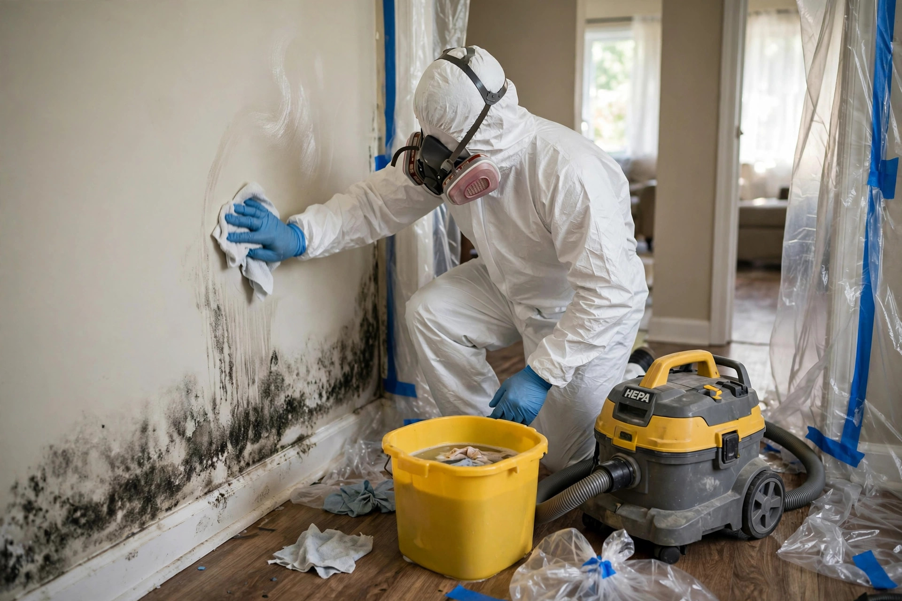

Full-service mold cleanup, handled in one visit plan
Cleanup is more than wiping a wall. Real remediation seals the area, removes what can't be saved, scrubs the air, and verifies the moisture source is fixed — so the problem doesn't return next season.
What "full service" actually includes
Every item below is part of the job. Nothing is an upsell.
- Containment barriers — poly sheeting sealed around the work zone keeps spores from drifting into clean rooms while we work.
- HEPA air scrubbing — negative-air machines filter the contained space continuously during removal.
- Removal of unsalvageable material — drywall, insulation, or carpet that mold has penetrated comes out in sealed bags, not dragged through the house.
- HEPA vacuuming and damp-wiping — remaining hard surfaces get vacuumed with HEPA filtration, then wiped with an antimicrobial solution.
- Moisture source correction — the leak, condensation point, or drainage issue that fed the growth gets identified and addressed.
- Post-cleanup verification — moisture readings and a visual check confirm the area is dry and clean before containment comes down.
Keeping it from coming back
Cleanup without prevention is a temporary win. These habits protect the work.
Run bath fans to the outside
Fans should exhaust through the roof or a gable wall, never into the attic. Twenty minutes after a shower clears most of the moisture load.
Watch the Ten Mile growth zone
New construction west of Ten Mile Road often sits on freshly graded lots where drainage patterns are still settling. Walk your grading each spring and keep soil sloped away from the foundation.
Service the HVAC drain
Meridian summers run air conditioners hard. A clogged condensate line can quietly soak a closet or utility room. A yearly check takes minutes.
Know your shutoffs
The Meridian Building Department requires accessible main water shutoffs in new construction — make sure everyone in the house knows where yours is before a pipe lets go.
A Bridgetower guest bath with a slow fan
The exhaust fan in a rarely used guest bathroom had been venting into the attic instead of outside — a shortcut sometimes found in fast-built 2000s homes. Warm moist air condensed on the cold roof sheathing each winter, and dark staining spread across the plywood. Cleanup meant re-venting the fan through the roof, removing the stained sheathing section, and scrubbing the air. The fix was half ventilation correction, half removal.
Sizing the job before we start
Rough guide so you know what to expect when you call.
| Growth area | Typical approach | What drives the scope |
|---|---|---|
| Under 10 sq ft | Targeted cleanup, half-day | Surface growth on tile, glass, or sealed wood |
| 10–30 sq ft | Contained cleanup, full day | Drywall section or closet interior |
| 30–100 sq ft | Multi-day remediation | Wall cavities, subfloor, or HVAC-adjacent areas |
| Whole-room or more | Phased project | Basement, attic, or post-flood recovery |
Sizes are illustrative. The EPA recommends professional help for larger areas and always fixing the moisture first (EPA — Mold, Moisture & Your Home).
Remediation questions, answered directly
Do I have to leave the house during cleanup?
Usually not. Containment barriers and negative-air machines keep the work zone isolated, so the rest of the home stays usable. For very large projects we will tell you honestly if temporary relocation makes sense.
Can you save my drywall or does it all come out?
It depends on penetration. Surface growth on sealed paint can sometimes be cleaned, but once mold has grown into the paper facing or the gypsum core, that section must be removed. We show you what we find before deciding.
Is bleach enough for a small patch?
Bleach can discolor surface mold on hard, non-porous materials, but it does not reach roots in porous drywall or wood — and it adds moisture. For anything beyond a tile-grout spot, proper removal beats chemical shortcuts.
How do I know the job is really done?
We verify with moisture meter readings at or below dry standards, a visual inspection of every surface in the contained area, and confirmation that the moisture source is fixed. You see the readings yourself.
Will my homeowner's insurance cover this?
Policies vary widely. Sudden water damage that leads to mold is sometimes covered; long-term seepage usually is not. We document everything in writing so you have records if you file a claim — but check your own policy first.
Sources: EPA — Mold, Moisture & Your Home CDC — Mold and Health

One call, the whole job handled
Containment to clearance — call and describe what you're seeing.
Call (321) 985-3339